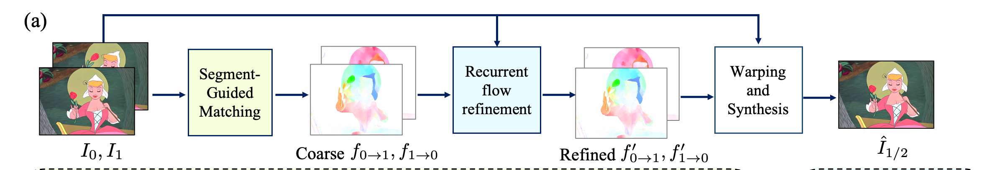
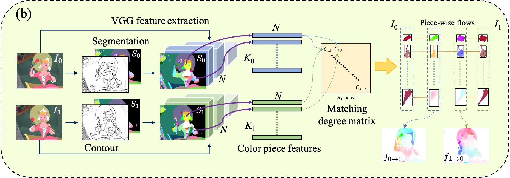
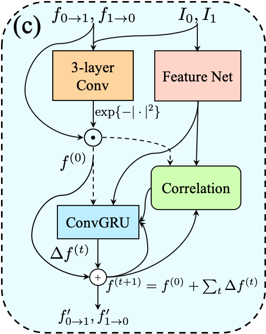

AnimeInterp
Deep Animation Video Interpolation in the Wild
Siyao, Li, et al
Paper Reading
Introduction
Different from natural video interpolation, animation video has unique characteristics:
- Texture Insufficiency: Cartoons comprise lines and smooth color pieces. The smooth areas lack textures and make it difficult to estimate accurate motions on animation videos.
- Large Motions: Cartoons express stories via exaggeration. Some of the motions are non-linear and extremely large.
Along with original challenges of natural video interpolation, like occlussion handling, video interpolation in animations remains a challenging task.
This paper propsed an effective framework, AnimeInterp[8], with two dedicated modules, SGM and RFR, in a coarse-to-fine manner.
Contributions
- Formally define and study the animation video interpolation problem for the first time.
- Propose an effective animation interpolation framework named AnimeInterp with two dedicated modules to resolve the “lack of textures” and “non-linear and extremely large motion” challenges, which outperforms existing state-of-the-art methods both quantitatively and qualitatively.
- Build a large-scale cartoon triplet dataset called ATD-12K with large content diversity representing many types of animations to test animation video interpolation methods.
Limits
- Not mentioned
Framework with Dataset and Correspondent Codes
Framework

-Dataset
ATD-12K Dataset[8] with triplets of animation frames from videos in the wild. It has been splited into 10k training samples and 2k test samples.
Specific annotations are in .json file, include:
- difficulty levels: 0 : “Easy”, 1 : “Medium”, 2 : “Hard”.
- motion RoI(Region of Interest): x, y, width, height.
- general_motion_type: "translation", "rotation", "scaling", "deformation".
- behavior: "speaking", "walking", "eating", "sporting", "fetching", "others".
-Segment-Guided Matching (SGM Module)

input: \(I_{0}\), \(I_{1}\) - input images
output: \(f_{0\rightarrow1}\), \(f_{1\rightarrow0}\) - coarse optical flow
In this part, '.' refer to directry models/sgm_model.
1. Color Piece Segmentation
Laplacian filter to extract contours of animation frames[1]. [./gen_labelmap.py/dline_of].
“Trapped- ball” algorithm to fill the contours then generate color pieces[1]. [./linefiller & gen_labelmap.py/trapped_ball_processed]
A segmentation map where pixels of each color piece is labeled by an identity number. [./linefiller/trappedball_fill.py/build_fill_map]
2. Feature Collection
Extract features of relu1_2, relu2_2, relu3_4 and relu4_4 layers from pretrained VGG-19 model[2]. [./my_models.py/create_VGGFeatNet]
Assemble the features belonging to one segment by the super-pixel pooling[3]. [gen_sgm.py/superpixel_pooling]
3. Color Piece Matching
Compute an affinity metric \(\mathcal{A}\) [./gen_sgm.py line 553], the distance penalty \(\mathcal{L}_{dist}\) [./gen_sgm.py line 559], the size penalty \(\mathcal{L}_{size}\) [./gen_sgm.py line 564], the matching map \(\mathcal{M}\) [./gen_sgm.py/mutual_matching].
4. Flow Generation
Compute flow f [./gen_sgm.py/get_guidance_flow]
-Recurrent Flow Refinement Network (RFR Module)

input: \(I_{0}\), \(I_{1}\), \(f_{0\rightarrow1}\), \(f_{1\rightarrow0}\) - input images and coarse optical flow computed by SGM module
output: \(f^{’}_{0\rightarrow1}\), \(f^{’}_{1\rightarrow0}\) - fine flow
In this part, '.' refer to directry models/rfr_model.
Inspired by [4], design a transformer-like architecture to recurrently refine the piece-wise flow.
- 3-layer Conv [./rfr_new.py/ErrorAttention]
- Feature Net [./extractor.py/BasicEncoder]
- ConvGRU[5] [./update.py/SepConvGRU]
- Correlation [./corr.py/CorrBlock]
-Frame Warping and Synthesis
input: \(I_{0}\), \(I_{1}\), \(f^{’}_{0\rightarrow1}\), \(f^{’}_{1\rightarrow0}\) - input images and fine flow computed by RFR module
output: \(\hat{I}_{1/2}\) - interpolated image
In this part, '.' refer to directry models.
Generate the intermediate frame by using the splatting and synthesis strategy of Soft-Splat[6].
All features and input frames are softmax splatted via forward warping. [./softsplat.py/ModuleSoftsplat]
All warped frames and features are fed into a GridNet[7] to synthesize the target frame. [./GridNet.py/GridNet]
References
[1] Zhang, Song-Hai, et al. "Vectorizing cartoon animations." IEEE Transactions on Visualization and Computer Graphics 15.4 (2009): 618-629.
[2] Simonyan, Karen, and Andrew Zisserman. "Very deep convolutional networks for large-scale image recognition." arXiv preprint arXiv:1409.1556 (2014).
[3] Liu, Fayao, et al. "Learning depth from single monocular images using deep convolutional neural fields." IEEE transactions on pattern analysis and machine intelligence 38.10 (2015): 2024-2039.
[4] Teed, Zachary, and Jia Deng. "Raft: Recurrent all-pairs field transforms for optical flow." European conference on computer vision. Springer, Cham, 2020.
[5] Cho, Kyunghyun, et al. "On the properties of neural machine translation: Encoder-decoder approaches." arXiv preprint arXiv:1409.1259 (2014).
[6] Niklaus, Simon, and Feng Liu. "Softmax splatting for video frame interpolation." Proceedings of the IEEE/CVF Conference on Computer Vision and Pattern Recognition. 2020.
[7] Fourure, Damien, et al. "Residual conv-deconv grid network for semantic segmentation." arXiv preprint arXiv:1707.07958 (2017).
[8] Siyao, Li, et al. "Deep animation video interpolation in the wild." Proceedings of the IEEE/CVF Conference on Computer Vision and Pattern Recognition. 2021.